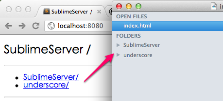
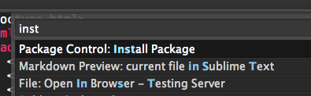
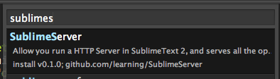
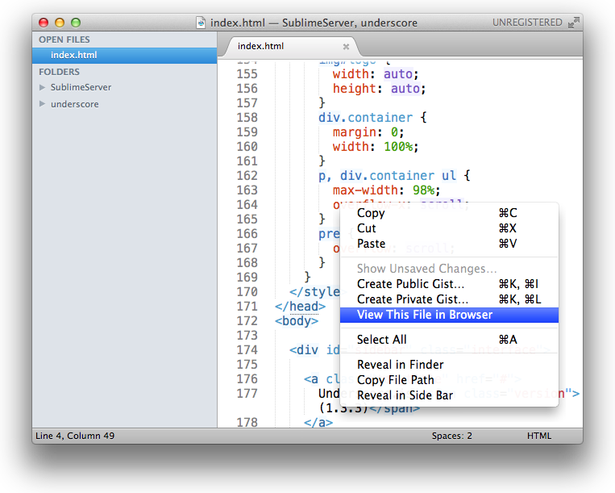

Preface
- SublimeServer is a Sublime Text 2 Plugin, so you must get Sublime Text 2 first
- I'm not a Pythoner, so, the code maybe uncomely
Introduction
What SublimeServer can do? It can serves all the open project folders in Sublime, also the sub-floders and files in it, convenience for test you static html pages.

System Tested
SublimeServer has been test on Mac OS X Lion, Windows 7 and Windows XP, linux not tested.
Installation
Install with Package Control
If you're using wbond's sublime package control, that's the easy way to install SublimeServer, I strongly recommend you use package control to install SublimeServer, it will auto update when a new version SublimeServer is available.
- Call out the Sublime Command Palette with
Ctrl+Shift+P or Command+Shift+P, type Install Package and return 
- Now input
SublimeServer and return, now SublimeServer will auto install 
Using git
- cd to your Sublime packages folder, don't know where is it? Open Sublime and choose Preferences -> Browser Packages, yeah, here is it!
$ git clone git://github.com/learning/SublimeServer.git- Done!
Using archive file
- Open Sublime and choose Preferences -> Browser Packages.
- Extract the archive file here, you'll get a folder named SublimeServer, and now it works.
How to use
- Go to you Sublime, you'll find a SublimeServer menu under Tool -> SublimeServer
- Change the setting as you wish, choose Tool -> SublimeServer -> Settings
- Once the SublimeServer started, you can view your file by control-click(right-click in Windows) at the current edit region. 
- Or just type
http://localhost:port/ in your browser, the default port is 8080, your can change it in the SublimeServer settings file
Change Log
0.3.2 - Oct 12, 2014
- Add markdown support, thanks rookiecj.
- Add default stylesheet.
- Add default extension setting, thanks jdiamond.
- Fix some ST3 problems
0.3.1 - Jun 1, 2014
Add Sublime Text 3 support.
0.2.1 - Aug 31, 2012
Improvements
- Add auto-start support, Thanks sapara.(#8)
0.2.0 - Jul 20, 2012
Bug fix:
- While dragging new folders to Sublime or remove folders from Sublime, SublimeServer cannot refresh it.(#4)
Improvements
- Custom mime-types support.
- Disable unavailable menu items, Thanks bizoo.(#6)
0.1.2 - Jun 28, 2012
Bug fix:
- Thread still alive and cannot stop.(#2)
Misc:
- Move
SublimeServer.sublime-settings to User folder.
0.1.0 - Jun 02, 2012
SublimeServer can basically use
Know issues:
- While sublime reload plugins, last SublimeServer thread still alive and cannot stop it.(#2)
- While dragging new folders to Sublime or remove folders from Sublime, SublimeServer cannot refresh it.(#4)
Support